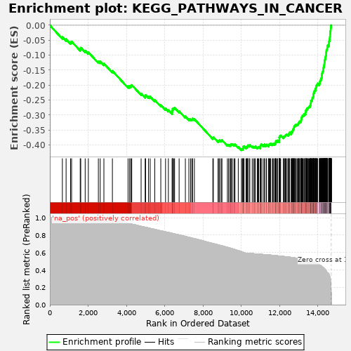
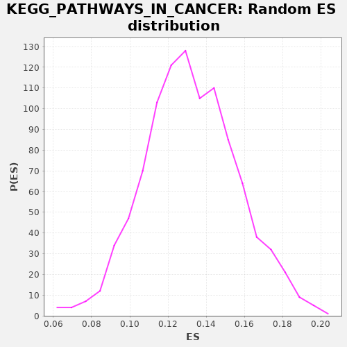

| | | Dataset | drug_embeddings_gsea |
| Phenotype | NoPhenotypeAvailable |
| Upregulated in class | na_neg |
| GeneSet | KEGG_PATHWAYS_IN_CANCER |
| Enrichment Score (ES) | -0.4179033 |
| Normalized Enrichment Score (NES) | NaN |
| Nominal p-value | NaN |
| FDR q-value | 1.0 |
| FWER p-Value | 0.0 |
Table: GSEA Results Summary

Fig 1: Enrichment plot: KEGG_PATHWAYS_IN_CANCER
Profile of the Running ES Score & Positions of GeneSet Members on the Rank Ordered List
| PROBE | GENE SYMBOL | GENE_TITLE | RANK IN GENE LIST | RANK METRIC SCORE | RUNNING ES | CORE ENRICHMENT | | 1 | FGF14 | | | 654 | 1.000 | -0.0393 | No |
| 2 | HHIP | | | 849 | 1.000 | -0.0466 | No |
| 3 | LAMB4 | | | 1081 | 1.000 | -0.0565 | No |
| 4 | WNT7A | | | 1136 | 1.000 | -0.0541 | No |
| 5 | DAPK2 | | | 1586 | 1.000 | -0.0792 | No |
| 6 | PTCH2 | | | 1614 | 1.000 | -0.0749 | No |
| 7 | WNT11 | | | 1845 | 1.000 | -0.0848 | No |
| 8 | SHH | | | 2011 | 1.000 | -0.0901 | No |
| 9 | WNT10B | | | 2534 | 1.000 | -0.1202 | No |
| 10 | WNT6 | | | 2630 | 1.000 | -0.1207 | No |
| 11 | WNT5B | | | 2823 | 1.000 | -0.1279 | No |
| 12 | WNT8A | | | 3267 | 1.000 | -0.1525 | No |
| 13 | CTNNA3 | | | 4084 | 0.939 | -0.2034 | No |
| 14 | FZD10 | | | 4166 | 0.933 | -0.2033 | No |
| 15 | WNT9B | | | 4230 | 0.929 | -0.2020 | No |
| 16 | RARB | | | 4277 | 0.928 | -0.1995 | No |
| 17 | SMO | | | 4766 | 0.902 | -0.2279 | No |
| 18 | LAMA5 | | | 4977 | 0.891 | -0.2370 | No |
| 19 | WNT2B | | | 5003 | 0.890 | -0.2333 | No |
| 20 | WNT1 | | | 5152 | 0.883 | -0.2381 | No |
| 21 | WNT10A | | | 5240 | 0.878 | -0.2388 | No |
| 22 | FZD3 | | | 5479 | 0.867 | -0.2500 | No |
| 23 | FGF12 | | | 5794 | 0.849 | -0.2666 | No |
| 24 | FGF13 | | | 6042 | 0.838 | -0.2786 | No |
| 25 | SUFU | | | 6190 | 0.831 | -0.2837 | No |
| 26 | FZD2 | | | 6389 | 0.821 | -0.2924 | No |
| 27 | LAMA2 | | | 6391 | 0.821 | -0.2874 | No |
| 28 | ARNT2 | | | 6400 | 0.821 | -0.2829 | No |
| 29 | FGF21 | | | 6413 | 0.820 | -0.2787 | No |
| 30 | STK36 | | | 6466 | 0.818 | -0.2773 | No |
| 31 | BMP2 | | | 6514 | 0.815 | -0.2756 | No |
| 32 | WNT16 | | | 6751 | 0.803 | -0.2870 | No |
| 33 | LAMC2 | | | 7077 | 0.786 | -0.3048 | No |
| 34 | PIK3R5 | | | 7260 | 0.776 | -0.3127 | No |
| 35 | VEGFB | | | 7349 | 0.771 | -0.3140 | No |
| 36 | EGLN1 | | | 7417 | 0.768 | -0.3140 | No |
| 37 | FZD5 | | | 7451 | 0.766 | -0.3116 | No |
| 38 | CDKN2B | | | 7548 | 0.759 | -0.3136 | No |
| 39 | EGLN2 | | | 8512 | 0.704 | -0.3762 | No |
| 40 | TFG | | | 8538 | 0.703 | -0.3736 | No |
| 41 | ITGA2 | | | 8784 | 0.689 | -0.3864 | No |
| 42 | SLC2A1 | | | 8833 | 0.686 | -0.3855 | No |
| 43 | RAC3 | | | 8873 | 0.683 | -0.3840 | No |
| 44 | RUNX1T1 | | | 8951 | 0.679 | -0.3852 | No |
| 45 | APC2 | | | 8988 | 0.678 | -0.3835 | No |
| 46 | CTBP2 | | | 9272 | 0.660 | -0.3991 | No |
| 47 | RAC2 | | | 9334 | 0.656 | -0.3993 | No |
| 48 | RASSF5 | | | 9409 | 0.651 | -0.4005 | No |
| 49 | COL4A6 | | | 9454 | 0.649 | -0.3995 | No |
| 50 | FLT3 | | | 9473 | 0.647 | -0.3968 | No |
| 51 | WNT7B | | | 9535 | 0.643 | -0.3971 | No |
| 52 | FGF7 | | | 9621 | 0.638 | -0.3991 | No |
| 53 | FGF10 | | | 9668 | 0.635 | -0.3984 | No |
| 54 | SOS2 | | | 9840 | 0.622 | -0.4064 | No |
| 55 | FZD8 | | | 10006 | 0.611 | -0.4141 | Yes |
| 56 | NKX3-1 | | | 10051 | 0.607 | -0.4135 | Yes |
| 57 | ITGA2B | | | 10087 | 0.604 | -0.4122 | Yes |
| 58 | FGF3 | | | 10089 | 0.603 | -0.4086 | Yes |
| 59 | PGF | | | 10097 | 0.603 | -0.4053 | Yes |
| 60 | DVL1 | | | 10144 | 0.599 | -0.4048 | Yes |
| 61 | STK4 | | | 10243 | 0.593 | -0.4080 | Yes |
| 62 | CSF1R | | | 10286 | 0.592 | -0.4073 | Yes |
| 63 | ARNT | | | 10301 | 0.592 | -0.4046 | Yes |
| 64 | E2F2 | | | 10341 | 0.591 | -0.4037 | Yes |
| 65 | LAMB3 | | | 10351 | 0.591 | -0.4007 | Yes |
| 66 | CBLC | | | 10429 | 0.589 | -0.4024 | Yes |
| 67 | DCC | | | 10442 | 0.589 | -0.3996 | Yes |
| 68 | FGF19 | | | 10568 | 0.587 | -0.4047 | Yes |
| 69 | LAMB2 | | | 10640 | 0.586 | -0.4060 | Yes |
| 70 | TCF7L1 | | | 10697 | 0.585 | -0.4063 | Yes |
| 71 | BMP4 | | | 10729 | 0.585 | -0.4049 | Yes |
| 72 | CTNNA2 | | | 10835 | 0.583 | -0.4086 | Yes |
| 73 | RET | | | 10871 | 0.582 | -0.4075 | Yes |
| 74 | LAMA3 | | | 10907 | 0.582 | -0.4063 | Yes |
| 75 | COL4A2 | | | 10994 | 0.580 | -0.4087 | Yes |
| 76 | PDGFA | | | 11001 | 0.580 | -0.4056 | Yes |
| 77 | PLD1 | | | 11002 | 0.580 | -0.4020 | Yes |
| 78 | RALB | | | 11024 | 0.580 | -0.3999 | Yes |
| 79 | ITGA6 | | | 11038 | 0.579 | -0.3972 | Yes |
| 80 | TPM3 | | | 11136 | 0.578 | -0.4004 | Yes |
| 81 | RALA | | | 11207 | 0.576 | -0.4018 | Yes |
| 82 | AKT3 | | | 11209 | 0.576 | -0.3983 | Yes |
| 83 | PIK3CD | | | 11299 | 0.574 | -0.4009 | Yes |
| 84 | DAPK3 | | | 11318 | 0.574 | -0.3987 | Yes |
| 85 | APPL1 | | | 11421 | 0.572 | -0.4022 | Yes |
| 86 | AXIN2 | | | 11434 | 0.572 | -0.3995 | Yes |
| 87 | FGF23 | | | 11457 | 0.572 | -0.3976 | Yes |
| 88 | FZD9 | | | 11497 | 0.571 | -0.3968 | Yes |
| 89 | FGF4 | | | 11528 | 0.571 | -0.3953 | Yes |
| 90 | PIK3CG | | | 11617 | 0.568 | -0.3980 | Yes |
| 91 | NCOA4 | | | 11650 | 0.568 | -0.3967 | Yes |
| 92 | FZD6 | | | 11684 | 0.567 | -0.3955 | Yes |
| 93 | FGF8 | | | 11748 | 0.566 | -0.3964 | Yes |
| 94 | CKS1B | | | 11780 | 0.565 | -0.3951 | Yes |
| 95 | TCF7 | | | 11781 | 0.565 | -0.3916 | Yes |
| 96 | TGFA | | | 11798 | 0.565 | -0.3892 | Yes |
| 97 | PIK3CB | | | 11808 | 0.564 | -0.3864 | Yes |
| 98 | EGLN3 | | | 11872 | 0.563 | -0.3873 | Yes |
| 99 | RXRG | | | 11888 | 0.562 | -0.3849 | Yes |
| 100 | CCDC6 | | | 11978 | 0.560 | -0.3876 | Yes |
| 101 | FGF17 | | | 11979 | 0.560 | -0.3842 | Yes |
| 102 | FGF6 | | | 11980 | 0.560 | -0.3808 | Yes |
| 103 | FGF18 | | | 11981 | 0.560 | -0.3773 | Yes |
| 104 | FGF9 | | | 11982 | 0.560 | -0.3739 | Yes |
| 105 | FZD4 | | | 11998 | 0.560 | -0.3715 | Yes |
| 106 | LAMB1 | | | 12033 | 0.559 | -0.3704 | Yes |
| 107 | NTRK1 | | | 12052 | 0.558 | -0.3682 | Yes |
| 108 | PPARD | | | 12195 | 0.555 | -0.3747 | Yes |
| 109 | RXRB | | | 12199 | 0.555 | -0.3715 | Yes |
| 110 | FGF1 | | | 12244 | 0.554 | -0.3711 | Yes |
| 111 | PIAS3 | | | 12277 | 0.553 | -0.3699 | Yes |
| 112 | TPR | | | 12302 | 0.552 | -0.3682 | Yes |
| 113 | TRAF4 | | | 12322 | 0.552 | -0.3661 | Yes |
| 114 | CSF2RA | | | 12354 | 0.551 | -0.3649 | Yes |
| 115 | CCNE2 | | | 12427 | 0.549 | -0.3665 | Yes |
| 116 | SOS1 | | | 12466 | 0.549 | -0.3658 | Yes |
| 117 | DVL3 | | | 12478 | 0.548 | -0.3632 | Yes |
| 118 | KITLG | | | 12500 | 0.548 | -0.3613 | Yes |
| 119 | MAX | | | 12508 | 0.548 | -0.3584 | Yes |
| 120 | RALGDS | | | 12607 | 0.545 | -0.3619 | Yes |
| 121 | COL4A4 | | | 12613 | 0.544 | -0.3589 | Yes |
| 122 | FGF2 | | | 12614 | 0.544 | -0.3555 | Yes |
| 123 | EGF | | | 12663 | 0.543 | -0.3555 | Yes |
| 124 | PDGFRA | | | 12679 | 0.542 | -0.3532 | Yes |
| 125 | KLK3 | | | 12689 | 0.542 | -0.3505 | Yes |
| 126 | NRAS | | | 12693 | 0.541 | -0.3474 | Yes |
| 127 | MITF | | | 12727 | 0.541 | -0.3464 | Yes |
| 128 | FLT3LG | | | 12746 | 0.540 | -0.3443 | Yes |
| 129 | TGFB3 | | | 12751 | 0.540 | -0.3413 | Yes |
| 130 | MECOM | | | 12757 | 0.540 | -0.3383 | Yes |
| 131 | TGFB2 | | | 12780 | 0.539 | -0.3365 | Yes |
| 132 | TRAF5 | | | 12796 | 0.538 | -0.3342 | Yes |
| 133 | AXIN1 | | | 12843 | 0.537 | -0.3341 | Yes |
| 134 | APC | | | 12853 | 0.537 | -0.3315 | Yes |
| 135 | FGFR2 | | | 12909 | 0.534 | -0.3320 | Yes |
| 136 | PIAS2 | | | 12941 | 0.533 | -0.3309 | Yes |
| 137 | CCNA1 | | | 12976 | 0.531 | -0.3300 | Yes |
| 138 | RALBP1 | | | 12980 | 0.531 | -0.3269 | Yes |
| 139 | ITGA3 | | | 13003 | 0.530 | -0.3252 | Yes |
| 140 | PDGFB | | | 13019 | 0.529 | -0.3230 | Yes |
| 141 | FGFR3 | | | 13043 | 0.528 | -0.3213 | Yes |
| 142 | RUNX1 | | | 13095 | 0.527 | -0.3216 | Yes |
| 143 | PLCG2 | | | 13114 | 0.526 | -0.3196 | Yes |
| 144 | GLI2 | | | 13125 | 0.525 | -0.3171 | Yes |
| 145 | WNT5A | | | 13129 | 0.525 | -0.3141 | Yes |
| 146 | ARAF | | | 13137 | 0.525 | -0.3113 | Yes |
| 147 | FGFR1 | | | 13154 | 0.524 | -0.3092 | Yes |
| 148 | PAX8 | | | 13158 | 0.524 | -0.3062 | Yes |
| 149 | LAMA1 | | | 13173 | 0.523 | -0.3040 | Yes |
| 150 | PIAS4 | | | 13205 | 0.522 | -0.3029 | Yes |
| 151 | BCR | | | 13219 | 0.521 | -0.3006 | Yes |
| 152 | COL4A1 | | | 13270 | 0.519 | -0.3009 | Yes |
| 153 | GLI3 | | | 13284 | 0.519 | -0.2986 | Yes |
| 154 | WNT4 | | | 13291 | 0.518 | -0.2958 | Yes |
| 155 | RASSF1 | | | 13348 | 0.516 | -0.2966 | Yes |
| 156 | WNT3 | | | 13357 | 0.515 | -0.2940 | Yes |
| 157 | WNT2 | | | 13358 | 0.515 | -0.2908 | Yes |
| 158 | ITGAV | | | 13364 | 0.515 | -0.2880 | Yes |
| 159 | E2F3 | | | 13365 | 0.515 | -0.2848 | Yes |
| 160 | RHOA | | | 13398 | 0.513 | -0.2839 | Yes |
| 161 | MMP1 | | | 13399 | 0.513 | -0.2807 | Yes |
| 162 | NFKB2 | | | 13437 | 0.511 | -0.2801 | Yes |
| 163 | MAPK10 | | | 13440 | 0.511 | -0.2771 | Yes |
| 164 | PTGS2 | | | 13482 | 0.508 | -0.2769 | Yes |
| 165 | GLI1 | | | 13496 | 0.506 | -0.2746 | Yes |
| 166 | FOXO1 | | | 13522 | 0.505 | -0.2733 | Yes |
| 167 | FGF5 | | | 13543 | 0.504 | -0.2716 | Yes |
| 168 | KIT | | | 13582 | 0.501 | -0.2711 | Yes |
| 169 | MSH3 | | | 13586 | 0.501 | -0.2683 | Yes |
| 170 | FH | | | 13611 | 0.499 | -0.2669 | Yes |
| 171 | CTNNA1 | | | 13612 | 0.499 | -0.2638 | Yes |
| 172 | PRKCG | | | 13617 | 0.499 | -0.2610 | Yes |
| 173 | CBLB | | | 13633 | 0.498 | -0.2590 | Yes |
| 174 | MAP2K2 | | | 13634 | 0.498 | -0.2559 | Yes |
| 175 | PIK3CA | | | 13636 | 0.498 | -0.2529 | Yes |
| 176 | RAC1 | | | 13657 | 0.496 | -0.2513 | Yes |
| 177 | LEF1 | | | 13693 | 0.494 | -0.2507 | Yes |
| 178 | DVL2 | | | 13698 | 0.493 | -0.2479 | Yes |
| 179 | TCF7L2 | | | 13706 | 0.493 | -0.2454 | Yes |
| 180 | GSTP1 | | | 13710 | 0.493 | -0.2425 | Yes |
| 181 | RARA | | | 13742 | 0.490 | -0.2417 | Yes |
| 182 | HGF | | | 13747 | 0.490 | -0.2389 | Yes |
| 183 | CTBP1 | | | 13759 | 0.489 | -0.2367 | Yes |
| 184 | CUL2 | | | 13765 | 0.488 | -0.2341 | Yes |
| 185 | DAPK1 | | | 13767 | 0.488 | -0.2311 | Yes |
| 186 | TGFBR1 | | | 13774 | 0.488 | -0.2285 | Yes |
| 187 | PIAS1 | | | 13784 | 0.487 | -0.2262 | Yes |
| 188 | FZD7 | | | 13805 | 0.486 | -0.2246 | Yes |
| 189 | JAK1 | | | 13812 | 0.485 | -0.2220 | Yes |
| 190 | EPAS1 | | | 13816 | 0.484 | -0.2192 | Yes |
| 191 | STAT5B | | | 13832 | 0.483 | -0.2173 | Yes |
| 192 | AKT2 | | | 13873 | 0.480 | -0.2171 | Yes |
| 193 | PLCG1 | | | 13876 | 0.480 | -0.2143 | Yes |
| 194 | TGFB1 | | | 13878 | 0.480 | -0.2114 | Yes |
| 195 | PTCH1 | | | 13890 | 0.478 | -0.2093 | Yes |
| 196 | TGFBR2 | | | 13905 | 0.477 | -0.2073 | Yes |
| 197 | WNT3A | | | 13911 | 0.477 | -0.2047 | Yes |
| 198 | BIRC3 | | | 13918 | 0.475 | -0.2022 | Yes |
| 199 | FADD | | | 13932 | 0.474 | -0.2002 | Yes |
| 200 | PIK3R3 | | | 13963 | 0.471 | -0.1994 | Yes |
| 201 | SPI1 | | | 13969 | 0.470 | -0.1968 | Yes |
| 202 | PIK3R2 | | | 13979 | 0.469 | -0.1946 | Yes |
| 203 | BRAF | | | 14075 | 0.460 | -0.1984 | Yes |
| 204 | CDKN1B | | | 14079 | 0.459 | -0.1958 | Yes |
| 205 | VEGFA | | | 14089 | 0.458 | -0.1936 | Yes |
| 206 | JUP | | | 14105 | 0.455 | -0.1918 | Yes |
| 207 | CYCS | | | 14106 | 0.455 | -0.1890 | Yes |
| 208 | RXRA | | | 14112 | 0.454 | -0.1866 | Yes |
| 209 | ETS1 | | | 14131 | 0.452 | -0.1850 | Yes |
| 210 | RBX1 | | | 14139 | 0.451 | -0.1827 | Yes |
| 211 | CDC42 | | | 14167 | 0.446 | -0.1819 | Yes |
| 212 | IGF1R | | | 14173 | 0.445 | -0.1795 | Yes |
| 213 | HRAS | | | 14175 | 0.445 | -0.1768 | Yes |
| 214 | NFKBIA | | | 14190 | 0.442 | -0.1751 | Yes |
| 215 | BIRC2 | | | 14201 | 0.441 | -0.1731 | Yes |
| 216 | PRKCB | | | 14202 | 0.441 | -0.1704 | Yes |
| 217 | MMP9 | | | 14204 | 0.440 | -0.1677 | Yes |
| 218 | MTOR | | | 14207 | 0.440 | -0.1651 | Yes |
| 219 | CCND1 | | | 14216 | 0.438 | -0.1630 | Yes |
| 220 | BAD | | | 14218 | 0.438 | -0.1604 | Yes |
| 221 | ZBTB16 | | | 14231 | 0.436 | -0.1585 | Yes |
| 222 | NOS2 | | | 14242 | 0.435 | -0.1566 | Yes |
| 223 | HIF1A | | | 14257 | 0.432 | -0.1549 | Yes |
| 224 | HSP90B1 | | | 14263 | 0.431 | -0.1526 | Yes |
| 225 | MMP2 | | | 14276 | 0.427 | -0.1508 | Yes |
| 226 | CHUK | | | 14282 | 0.426 | -0.1485 | Yes |
| 227 | IGF1 | | | 14284 | 0.426 | -0.1460 | Yes |
| 228 | PPARG | | | 14285 | 0.426 | -0.1433 | Yes |
| 229 | CXCL8 | | | 14293 | 0.425 | -0.1412 | Yes |
| 230 | FAS | | | 14302 | 0.423 | -0.1392 | Yes |
| 231 | BIRC5 | | | 14311 | 0.421 | -0.1371 | Yes |
| 232 | TRAF3 | | | 14317 | 0.420 | -0.1349 | Yes |
| 233 | FZD1 | | | 14327 | 0.419 | -0.1330 | Yes |
| 234 | VEGFC | | | 14331 | 0.416 | -0.1306 | Yes |
| 235 | CCNE1 | | | 14336 | 0.415 | -0.1283 | Yes |
| 236 | ITGB1 | | | 14339 | 0.415 | -0.1259 | Yes |
| 237 | FASLG | | | 14343 | 0.414 | -0.1236 | Yes |
| 238 | STAT1 | | | 14346 | 0.414 | -0.1212 | Yes |
| 239 | MET | | | 14353 | 0.412 | -0.1191 | Yes |
| 240 | PDGFRB | | | 14354 | 0.412 | -0.1165 | Yes |
| 241 | CDK4 | | | 14368 | 0.408 | -0.1149 | Yes |
| 242 | STAT5A | | | 14377 | 0.407 | -0.1130 | Yes |
| 243 | MAPK9 | | | 14388 | 0.405 | -0.1112 | Yes |
| 244 | PTK2 | | | 14395 | 0.403 | -0.1091 | Yes |
| 245 | TRAF6 | | | 14397 | 0.402 | -0.1067 | Yes |
| 246 | IKBKB | | | 14402 | 0.399 | -0.1045 | Yes |
| 247 | BRCA2 | | | 14407 | 0.398 | -0.1024 | Yes |
| 248 | TRAF1 | | | 14419 | 0.395 | -0.1007 | Yes |
| 249 | SKP2 | | | 14428 | 0.393 | -0.0988 | Yes |
| 250 | KRAS | | | 14429 | 0.393 | -0.0964 | Yes |
| 251 | IKBKG | | | 14430 | 0.392 | -0.0940 | Yes |
| 252 | VHL | | | 14433 | 0.390 | -0.0917 | Yes |
| 253 | BID | | | 14435 | 0.389 | -0.0894 | Yes |
| 254 | CSF3R | | | 14438 | 0.389 | -0.0872 | Yes |
| 255 | FOS | | | 14443 | 0.387 | -0.0851 | Yes |
| 256 | CRKL | | | 14446 | 0.386 | -0.0828 | Yes |
| 257 | CDK6 | | | 14471 | 0.374 | -0.0822 | Yes |
| 258 | MAPK3 | | | 14476 | 0.370 | -0.0802 | Yes |
| 259 | HDAC2 | | | 14480 | 0.369 | -0.0782 | Yes |
| 260 | CDH1 | | | 14484 | 0.367 | -0.0761 | Yes |
| 261 | PIK3R1 | | | 14486 | 0.366 | -0.0739 | Yes |
| 262 | GSK3B | | | 14490 | 0.364 | -0.0719 | Yes |
| 263 | SMAD4 | | | 14491 | 0.362 | -0.0697 | Yes |
| 264 | MSH2 | | | 14494 | 0.361 | -0.0676 | Yes |
| 265 | MSH6 | | | 14561 | 0.357 | -0.0700 | Yes |
| 266 | RAF1 | | | 14562 | 0.357 | -0.0678 | Yes |
| 267 | XIAP | | | 14569 | 0.355 | -0.0660 | Yes |
| 268 | CDKN2A | | | 14571 | 0.354 | -0.0639 | Yes |
| 269 | AR | | | 14576 | 0.352 | -0.0620 | Yes |
| 270 | PML | | | 14577 | 0.352 | -0.0599 | Yes |
| 271 | MAP2K1 | | | 14579 | 0.351 | -0.0578 | Yes |
| 272 | CRK | | | 14581 | 0.349 | -0.0557 | Yes |
| 273 | STAT3 | | | 14582 | 0.347 | -0.0536 | Yes |
| 274 | BAX | | | 14599 | 0.339 | -0.0526 | Yes |
| 275 | CDKN1A | | | 14608 | 0.333 | -0.0511 | Yes |
| 276 | CASP9 | | | 14609 | 0.333 | -0.0490 | Yes |
| 277 | TRAF2 | | | 14610 | 0.333 | -0.0470 | Yes |
| 278 | PTEN | | | 14614 | 0.328 | -0.0452 | Yes |
| 279 | RAD51 | | | 14620 | 0.322 | -0.0436 | Yes |
| 280 | NFKB1 | | | 14621 | 0.322 | -0.0416 | Yes |
| 281 | PRKCA | | | 14622 | 0.321 | -0.0396 | Yes |
| 282 | SMAD2 | | | 14627 | 0.317 | -0.0379 | Yes |
| 283 | MLH1 | | | 14631 | 0.308 | -0.0362 | Yes |
| 284 | CBL | | | 14633 | 0.306 | -0.0344 | Yes |
| 285 | ABL1 | | | 14634 | 0.306 | -0.0325 | Yes |
| 286 | FN1 | | | 14636 | 0.305 | -0.0307 | Yes |
| 287 | BCL2L1 | | | 14637 | 0.305 | -0.0289 | Yes |
| 288 | CASP8 | | | 14639 | 0.303 | -0.0271 | Yes |
| 289 | BCL2 | | | 14642 | 0.302 | -0.0254 | Yes |
| 290 | MAPK8 | | | 14643 | 0.298 | -0.0235 | Yes |
| 291 | ERBB2 | | | 14648 | 0.293 | -0.0220 | Yes |
| 292 | SMAD3 | | | 14649 | 0.292 | -0.0202 | Yes |
| 293 | CEBPA | | | 14654 | 0.284 | -0.0187 | Yes |
| 294 | HDAC1 | | | 14662 | 0.261 | -0.0176 | Yes |
| 295 | RB1 | | | 14664 | 0.257 | -0.0161 | Yes |
| 296 | CTNNB1 | | | 14665 | 0.257 | -0.0145 | Yes |
| 297 | MAPK1 | | | 14666 | 0.254 | -0.0130 | Yes |
| 298 | CREBBP | | | 14669 | 0.236 | -0.0116 | Yes |
| 299 | HSP90AB1 | | | 14671 | 0.234 | -0.0103 | Yes |
| 300 | CASP3 | | | 14673 | 0.233 | -0.0089 | Yes |
| 301 | RELA | | | 14675 | 0.231 | -0.0076 | Yes |
| 302 | AKT1 | | | 14676 | 0.227 | -0.0062 | Yes |
| 303 | GRB2 | | | 14682 | 0.197 | -0.0053 | Yes |
| 304 | JUN | | | 14687 | 0.176 | -0.0045 | Yes |
| 305 | CDK2 | | | 14688 | 0.167 | -0.0035 | Yes |
| 306 | EP300 | | | 14689 | 0.153 | -0.0025 | Yes |
| 307 | MDM2 | | | 14691 | 0.136 | -0.0018 | Yes |
| 308 | MYC | | | 14692 | 0.134 | -0.0009 | Yes |
| 309 | HSP90AA1 | | | 14693 | 0.133 | -0.0001 | Yes |
| 310 | EGFR | | | 14695 | 0.054 | 0.0001 | Yes |
| 311 | TP53 | | | 14698 | 0.000 | -0.0000 | Yes |
Table: GSEA details [plain text format]

Fig 2: KEGG_PATHWAYS_IN_CANCER: Random ES distribution
Gene set null distribution of ES for KEGG_PATHWAYS_IN_CANCER